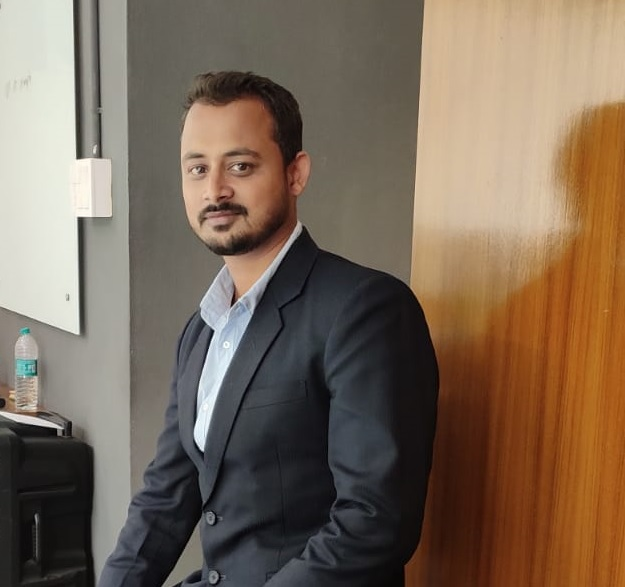

Intro

I am currently working as Assistant Professor Serinor Grade 1 in VIT-AP University Andhra Pradesh, India
Native of Assam and born in Mizoram, I am presently staying near to my working place.
I completed my Ph.D. on the Development of a Software-Defined Network (SDN) controller forInternet of Things (IoT) under the guidance of Prof. Goutam Saha and Dr. Arnab Kumar Maji from North-Eastern Hill University, Shillong, Meghalaya, India in the year 2021. The research work was mainly focused on the control plane of SDN-based IoT networks.
Work
Teaching
From 2021, I am currently working as Assistant Professor Serinor Grade 1 in VIT-AP University, Andhra Pradesh, India
Before joining VIT-AP University, I have worked with Sikkim Manipal Institute of Technology, Sikkim, India as an Assistant Professor from August 2020 to May 2021.
I have worked as an Visiting Faculty in MIT University Shillong campus, Shillong, Meghalaya, India in the year 2018.
I started by teaching carrier with Mizoram University, Aizawl, Mizoram, India in the department of Information Technology. I worked as a Guest Faculty from August 2014 to July 2016.
Resource Person
-
5 Days New Faculty Orientation programme, Topic -- CO/PO/Mapping of CO and PO, on 23rd April 2022, - April 2022” organized by Center for Teaching and Learning, VIT-AP University
-
Latex Workshop, Topic -- Handson on Latex, during 8th Oct – 14th October, 2020 in the Department of CSE, Sikkim Manipal Institute of Technology, Sikkim, India.
-
AICTE Training and Learning (ATAL) Academy Programme, Topic -- Improved IoT platforms in Simulation during 5th Oct – 9th October, 2020 in the Department of IT, North-Eastern Hill University, Shillong, Meghalaya, India.
-
AICTE Training and Learning (ATAL) Academy Programme, Topic -- IoT Applications: Software based simulation, during 27th Sept – 4th October, 2019 in the Department of IT, Mizoram University, Aizawl, India.
Workshop Organized
-
FIVE Day Faculty Workshop on “Research Proposal Writing & Funding Opportunities" from 1st March - 5th March 2022, VIT-AP University, Amaravati, Andhra Pradesh
-
One Day National Level Workshop on “CUDA Programming with Python” sponsored by NVIDIA Deep Learning Institute (DLI) – 9th May 2022, VIT-AP University, Amaravati, Andhra Pradesh
Professional Service
-
Technical Program Committee for 4th edition of the International Conference on Computing and Communication Systems, 13th - 15th October, 2022, Organized by the Department of Information Technology, North-Eastern Hill University (NEHU), Shillong, Meghalaya, India (I3CS 2022).
-
Technical Program Committee for International Conference on Smart Education, Health and ICT, 14th - 15th April 2022, Oxford,United Kingdom (SHI 2022).
-
Technical Program Committee for 3rd International Conference on Advanced Computational and Communication Paradigms, Organized by the Dept of Computer Science and Engineering Sikkim Manipal Institute of Technology (SMIT), Majitar, Sikkim-737136, India (ICACCP-2021).
Journal Reviewer
-
IEEE Internet of Things
-
IEEE Transactions on Vehicular Technology
-
IEEE Transactions on Mobile Computing
-
IEEE Transactions on Wireless Communications
-
IEEE Sensor
-
Wiley Transactions on Emerging Telecommunications Technologies
-
Springer Wireless Personal Communication
Research and Publication
Research
My area of research includes Interent of Things (IoT), Software-Defined Network (SDN), Blockchain and Big Data.
Journals
- Rahman, M. S., & Das, R. K. (2022). RTID: On-demand real-time data processing for IoT network . Materials Today: Proceedings, Vol. 62, No. 7pp. 4721-4725, 2022
- Das, R. K., Ahmed, N., Pohrmen, F. H., Maji, A. K., & Saha, G. (2020). 6LESDN: An Edge-Based Software-Defined Network for Internet of Things . IEEE Internet of Things Journal, Vol. 7, No. 8, pp. 7725-7733, 2020
- Das, R. K., Pohrmen, F. H., Maji, A. K., & Saha, G. (2020). FT-SDN: A Fault Tolerant Distributed Architecture for Software Defined Network . Wireless Personal Communications, Vol. 106, No. 2, pp. 1045-1066, 2020.
- Pohrmen, F. H., Das, R. K., & Saha, G. (2019). Blockchain‐based security aspects in heterogeneous Internet‐of‐Things networks: A survey . Transactions on Emerging Telecommunications Technologies, Vol. 30, No. 10, pp. e3741, 2019.
- Kumar Das, R., Khongbuh, W., Hazel Pohrmen, F., Kumar Maji, A., & Saha, G. (2019). Controller Placement and Selection Strategy for SDN . International Journal of Computational Intelligence & IoT, Vol. 2, No. 2, pp. 473-477, 2019.
Conferences
- Das, R. K., Jha, M., & Harizan, S. (2022). Performance Appraisal of 6LoWPAN and OpenFlow in SDN Enabled Edge-Based IoT Network . In Advanced Computational Paradigms and Hybrid Intelligent Computing (pp. 21-29). Springer, Singapore.
- Harizan, S., Kuila, P., & Das, R. K. (2022). HSA Based Sensor Nodes Deployment Strategy for Coverage and Connectivity in WSNs . In Advanced Computational Paradigms and Hybrid Intelligent Computing (pp. 73-81). Springer, Singapore.
- Das, R. K., Pohrmen, F. H., Maji, A. K., & Saha, G. (2021, May). FoSDN: A Software-Defined Edge Computation for Resource Constraint Network . In Proceedings of the International Conference on Computing and Communication Systems: I3CS 2020, NEHU, Shillong, India (Vol. 170, p. 463). Springer Nature.
- Das, R. K., Maji, A. K., & Saha, G. (2020). SD-6LN: Improved Existing IoT Framework by Incorporating SDN Approach. In International Conference on Innovative Computing and Communications, pp. 599-606. Springer, Singapore
- Marshoodulla, S. Z., Das, R. K., & Saha, G. (2019). Big Data Issues in SDN Based IoT: A Review . In International Conference on Big Data, Machine Learning, and Applications, pp. 72-82, Springer, Cham.
- Pohrmen, F. H., Das, R. K., Khongbuh, W., & Saha, G. (2018, July). Blockchain-based security aspects in Internet of Things network . In International Conference on Advanced Informatics for Computing Research (pp. 346-357). Springer, Singapore.
- Das, R. K., Maji, A. K., & Saha, G. (2019). Prospect of improving internet of things by incorporating software-defined network . In Advances in communication, devices and networking (pp. 537-544). Springer, Singapore.
Patents
- Patent 2021 G. Saha, R. K. Das, N. Ahmed, and A. K. Maji, "Multi-Purpose Switch Adaptable for a Specific SDN Based IoT Architecture", Indian patent filed on:04/12/2019, published on: 02/04/2021, number of pages: 37, number of claims: 7 (Ref: 201931049931)
- Patent 2021 G. Saha, R. K. Das, N. Ahmed, and A. K. Maji, "An improved SDN based IoT system", Indian patent filed on: 16/04/2021 (Ref: 202131017791)
Professonal Member
Contact
Name: Rohit Kumar Das
Address: School of Computer Science and Engineering, VIT-AP University, Beside AP Secretariat Amaravati, Andhra Pradesh 522237
Email: rohitdas.it.13@gmail.com